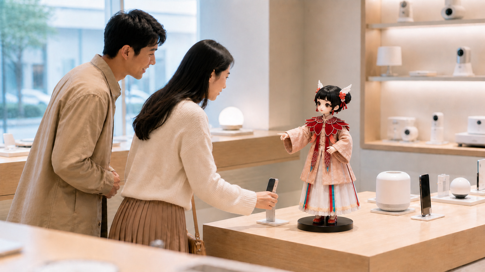
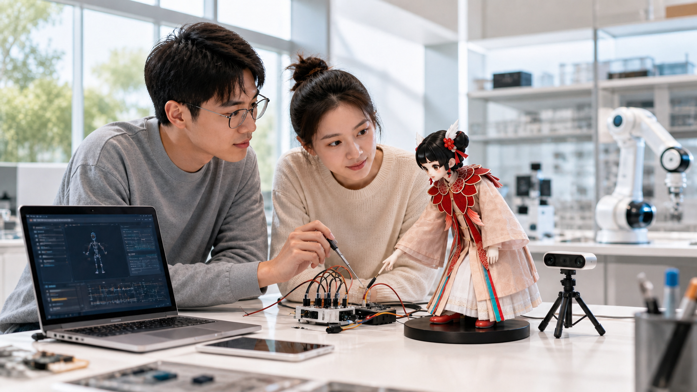

外观、骨骼、电子、系统、感知、控制与智能全链路能力
PARTNERSHIP / 2026
一起把智能
带进真实世界。
从一台机器人，到一个可持续运营的智能入口。汤问面向品牌、渠道、内容 IP、文旅空间、教育科研、行业客户与公共服务机构，提供覆盖硬件终端、智能系统、交互模型与场景应用的全栈合作方案。
从语音、动作与表情，到长期陪伴与场景化任务
标准采购、SDK/API 授权与定制开发
01 / PARTNERSHIP VALUE
不只交付产品，
不只交付产品，
更创造持续发生的价值。
技术壁垒、数据飞轮、生态构建与双向赋能，让一次合作从产品交付延伸为可持续增长的价值系统。
从「硬件产品」
到「智能入口」
长期陪伴、持续运营，承载服务与内容的个人智能终端。
TECH MOAT技术壁垒
自研电机 · 运动规划 · 多模态交互
从「静态展示」
到「主动交互」
以语音、动作、表情与视觉感知，主动理解并回应用户。
DATA FLYWHEEL数据飞轮
4D 时空交互数据持续优化体验
从「单品采购」
到「场景方案」
组合外观、动作、内容、系统与数据流程，让能力适配真实业务。
ECOSYSTEM生态构建
IP × 具身智能 × 软硬件数据服务
从「一次性交付」
到「长期运营」
通过内容更新、互动数据与开放接口形成可持续增长。
CO-CREATION双向赋能
C 端情感价值 · B 端定制与技术能力
02 / COOPERATION SCENARIOS
一种智能，
一种智能，
进入六种真实世界。
面向 IP、品牌空间、文旅展陈、教育科研、行业服务与公共服务，让同一套智能能力适配不同真实场景。
外观 · 结构 · 动作 · 智能体人格
IP 角色实体化
把动漫、游戏、影视与虚拟偶像做成可感知、可表达、可陪伴的实体终端，支撑粉丝互动与线下运营。
合作对象：内容 IP 方 · 潮玩 / MCN · 文创机构

多模态感知 · 智能体 · 任务调度
品牌空间互动
门店迎宾、产品讲解、会员互动与发布会展示；也可经渠道网络完成体验点共建与联合销售。
合作对象：品牌方 · 渠道方 · 商业综合体
多模态交互 · 场景任务流 · 内容系统
文旅展陈导览
博物馆讲解、科技馆互动、景区游客服务与沉浸式展陈，让空间里的角色真正会说话、会带路。
合作对象：文旅与商业空间 · 展馆 / 景区

本体 · SDK/API · 感知控制 · Agent
教育科研平台
为高校实验室与科创教育提供具身智能实验平台，支持二次开发、课程共建与人机交互研究。
合作对象：高校 / 实验室 · AI 教育机构
任务调度 · 系统接入 · 智能体工作流
行业服务终端
企业前台、园区与酒店迎宾、零售导购、康养陪伴等——接入知识库与业务系统，把服务做成可运营流程。
合作对象：行业客户 · 企业 / 酒店 / 康养
稳定部署 · 知识库 · 多轮问答
政府与公共服务
政务咨询、社区便民、城市展厅与政策宣导——以可落地的公共交互终端服务市民与访客。
合作对象：政府及公共服务机构
03 / PARTNERSHIP MODELS
三种合作路径，
三种合作路径，
从现在抵达未来。
标准采购用于快速部署，SDK/API 授权开放核心能力，定制开发面向专属产品与长期运营。
READY TO DEPLOY
标准采购
采购标准机器人终端，用于展示、教学、互动体验或运营试点。
快速验证场景 · 低启动门槛
BUILT TO EXTEND
SDK / API 授权
开放智能体、交互、控制与感知能力接口，支持客户团队二次开发。
拥有技术团队 · 需要底层能力
MADE FOR YOU
定制开发
围绕具体场景定制外观、动作、内容、交互、系统接口与运营流程。
目标明确 · 从概念到交付